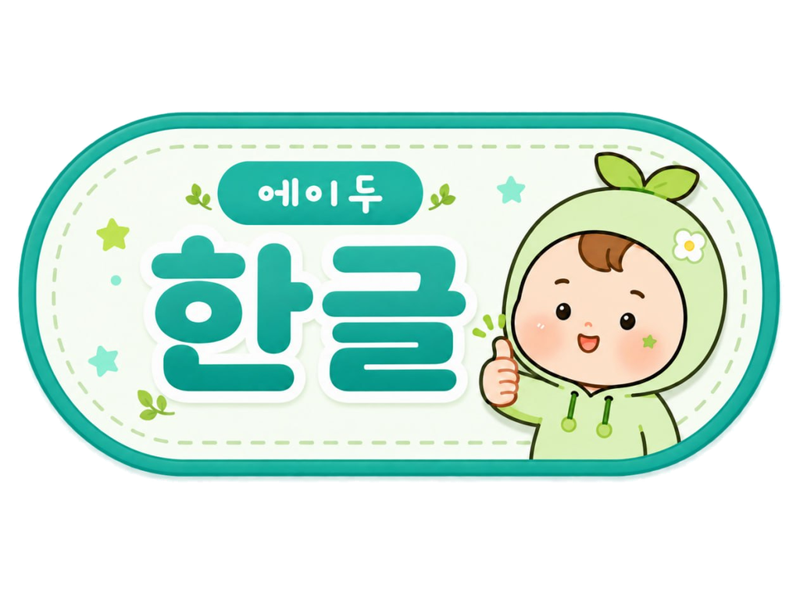

다른 출발선
한글 해득이 충분하지 않으면 교과 어휘와 개념을 읽는 데 추가 지원이 필요할 수 있습니다.
한글 해득 중심 통합교육 강의자료
학생마다 한글 해득 수준이 달라 교과를 읽고 이해하는 데 필요한 지원도 다릅니다. 에이두 한글은 기초 한글 학습을 교과 어휘와 읽기·쓰기 활동에 연결하도록 구성되었습니다.
01 · RESEARCH NECESSITY
같은 교과서를 사용해도 한글 해득 수준에 따라 읽기와 과제 수행에 필요한 지원이 다를 수 있습니다.
기초 한글 학습과 교과 활동을 연결하는 방안을 살펴봅니다.
한글 해득이 충분하지 않으면 교과 어휘와 개념을 읽는 데 추가 지원이 필요할 수 있습니다.
특수학급에서 익힌 글자와 낱말을 통합학급의 교과 어휘·문장과 연결하는 과정이 필요합니다.
읽기 어려움은 과제 수행에 영향을 줄 수 있고, 반복되면 도움 의존이나 회피로 이어질 수 있습니다.
교과 핵심을 유지하면서 어휘와 문장 이해를 학생 수준에 맞춰 지원해야 합니다.
02 · THE BRIDGE
학생 수준에 맞춰 글자와 낱말을 연습합니다.
교과 자료의 핵심어를 골라 읽기·쓰기·뜻 확인 활동에 활용합니다.
익힌 어휘와 문장을 교과 활동에서 활용할 기회를 제공합니다.
교과 활동에서 확인한 어려움은 후속 한글 지도에 참고하고, 학습한 어휘는 교과 활동에서 다시 다룹니다.
03 · FOUR LEVELS
보고서의 핵심 기능을 단계별로 살펴보고 직접 체험합니다.

한글 학습 전 그림·도형 활동으로 화면 조작과 선 긋기를 연습합니다.
모음과 자모 합성, 받침 낱말을 읽고 쓰며 소리와 글자를 연결합니다.
교과 자료의 핵심어를 골라 뜻 확인·읽기·쓰기 활동에 연결합니다.
교과 지문의 핵심 내용을 확인하고 선택·단답·서술형으로 답합니다.
04 · REVIEW & STUDENT RECORDS
2·3·4단계의 오답을 다시 연습하고 풀이 기록을 확인합니다.
05 · TEACHING CYCLE
학생별 풀이와 오답 기록을 참고해 다음 학습 내용을 정합니다. 기록은 교사가 수업을 계획할 때 참고 자료로 활용합니다.
읽기·쓰기 결과와 교과 학습 상황을 살펴 연습할 영역을 정합니다.
교과서와 활동지의 핵심어·문장을 읽고, 쓰고, 뜻을 확인합니다.
학습 중 확인한 오류와 새 어휘를 다음 활동을 계획할 때 참고합니다.
06 · CLASSROOM CASES
보고서에 제시된 국어·사회·과학 수업 사례를 정리했습니다. 과목별 핵심어를 한글 학습과 연결하는 예입니다.
학생이 자주 혼동하는 ‘ㅓ’와 ‘ㅗ’를 집중 학습 영역으로 설정합니다.
거미·고기·머리·모자처럼 두 모음이 포함된 낱말을 읽고 씁니다.
학습 기록에서 틀린 글자와 낱말을 확인해 다음 수업에 반영합니다.
모음 구별을 낱말 읽기·쓰기 연습으로 이어가는 구성입니다.
교과서의 ‘사회 변화·저출산·고령화·지능정보화’ 등 핵심어를 확인합니다.
뜻풀이와 관련 이미지를 확인하고 핵심어를 써 봅니다.
채점 결과와 오답을 확인하고, 틀린 단어를 다시 읽고 씁니다.
뜻·이미지·쓰기 활동으로 사회 교과 핵심어를 다루는 예입니다.
생태계·생물 요소·비생물 요소 등 수업 참여에 필요한 어휘를 선정합니다.
핵심어가 포함된 지문을 읽고 객관식·단답형 문제로 의미를 확인합니다.
나무·곤충·햇빛·물·공기처럼 활동 중 새로 확인된 어휘를 다음 학습에 반영합니다.
교과 어휘를 유지하고 지문과 문항의 난이도를 조정해 뜻을 확인합니다.
07 · WHAT CHANGED
동일한 ‘한글 또박또박’ 진단도구로 점수를 비교했습니다. 참여 학생 4명 모두 점수가 올랐고, 상승 폭은 서로 달랐습니다.
총점 106점 기준 · 회색 사전 / 주황 사후
학생별로 관찰된 변화 내용입니다.
※ 연구 참여 학생 4명의 사례 결과입니다. 표본이 적고 비교 집단이 없어, 전체 학생이나 프로그램의 효과로 일반화하기 어렵습니다.
특수학급에서 익힌 한글을 통합학급의 교과 어휘·문장 활동에 활용하고, 수업에서 확인한 어려움은 다음 한글 지도에 참고합니다.
교과는 함께 · 문해 수준은 맞춤으로